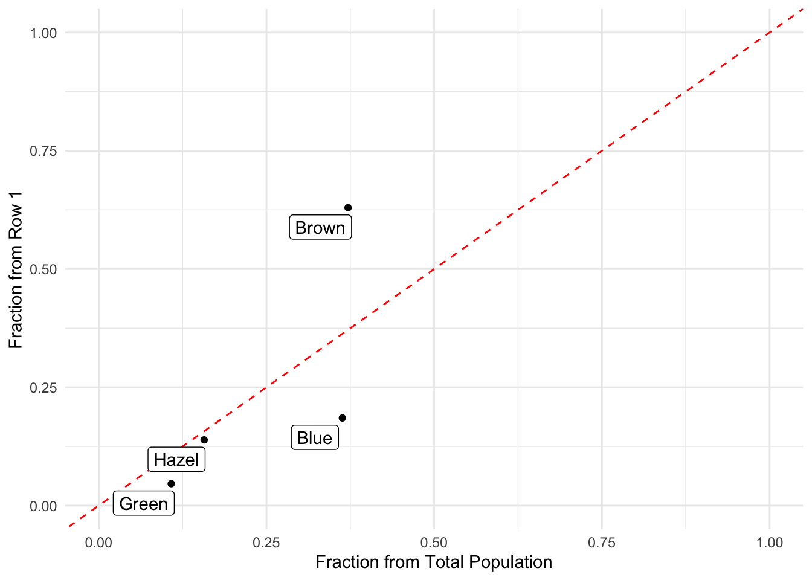

suppressMessages( library( tidyverse ) )
library( ggrepel )15 Contingency Analysisq
In this section, we are going to take a short dive into the kinds of analyses you would consider if you had discrete predictor and response data.
15.1 Discrete Data
Factors allow us to represent a type of data that exclusive and categorical. These data may, or may not, be ordered and in most cases, we can think of these kinds of data to represent things like, treatment levels, sampling locations, etc.
While we’ve seen this already, perhaps we hadn’t know how it was working under the hood, so I’m going to start by using days of the week—generated by hand and not from the lubridate library as they are a good example of a data type that is discrete and exclusive (e.g., you cannot be in both Monday and Wednesday at the same time).
In R, character data can be turned into a new data type called a Factor making it something that in statistical analyses we can use to represent things like treatment levels. Initially, they start as a character data type.
weekdays <- c("Monday","Tuesday","Wednesday",
"Thursday","Friday","Saturday",
"Sunday")
class( weekdays )[1] "character"Let’s assume I have sampled a random set of days (40 days in this case) as a data set I’ll use an example. In R, I’m just going to use the sample() function (to grab with replacement)
data <- sample( weekdays, size=40, replace=TRUE)
data [1] "Sunday" "Thursday" "Wednesday" "Wednesday" "Monday" "Wednesday"
[7] "Friday" "Wednesday" "Saturday" "Wednesday" "Saturday" "Thursday"
[13] "Thursday" "Sunday" "Sunday" "Sunday" "Saturday" "Monday"
[19] "Monday" "Wednesday" "Saturday" "Sunday" "Wednesday" "Thursday"
[25] "Tuesday" "Saturday" "Wednesday" "Friday" "Thursday" "Sunday"
[31] "Wednesday" "Monday" "Saturday" "Thursday" "Wednesday" "Wednesday"
[37] "Tuesday" "Thursday" "Thursday" "Wednesday"These data are still
class( data )[1] "character"If I’d like to turn them into a factor, we use… factor()
days <- factor( data )
is.factor( days )[1] TRUEclass( days )[1] "factor"Now when we look at the data, it looks a lot like it did before except for the last line which shows you the unique levels for elements in the vector.
summary( days ) Friday Monday Saturday Sunday Thursday Tuesday Wednesday
2 4 6 6 8 2 12 We can put them into data frames and they know how to summarize themselves properly by counting the number of occurances of each level.
df <- data.frame( ID = 1:40, Weekdays = days )
summary( df ) ID Weekdays
Min. : 1.00 Friday : 2
1st Qu.:10.75 Monday : 4
Median :20.50 Saturday : 6
Mean :20.50 Sunday : 6
3rd Qu.:30.25 Thursday : 8
Max. :40.00 Tuesday : 2
Wednesday:12 And we can directly access the unique levels within a factor as:
levels( days )[1] "Friday" "Monday" "Saturday" "Sunday" "Thursday" "Tuesday"
[7] "Wednesday"So factors can be categorical (e.g., one is just different than the next) and compared via == and != values. They can also be ordinal such that > and < make sense.
By default, a factor is not ordered unless we specify it to be so.
is.ordered( days )[1] FALSEdays[1] < days[2]Warning in Ops.factor(days[1], days[2]): '<' not meaningful for factors[1] NAdata <- factor( days, ordered=TRUE )
data [1] Sunday Thursday Wednesday Wednesday Monday Wednesday Friday
[8] Wednesday Saturday Wednesday Saturday Thursday Thursday Sunday
[15] Sunday Sunday Saturday Monday Monday Wednesday Saturday
[22] Sunday Wednesday Thursday Tuesday Saturday Wednesday Friday
[29] Thursday Sunday Wednesday Monday Saturday Thursday Wednesday
[36] Wednesday Tuesday Thursday Thursday Wednesday
7 Levels: Friday < Monday < Saturday < Sunday < Thursday < ... < WednesdaySo that if we go and try to order them, the only way they can be sorted is alphabetically (which is what R does internally when we run a summary() on the weekday stuff, it presentes the level counts in alphabetical order).
sort( data ) [1] Friday Friday Monday Monday Monday Monday Saturday
[8] Saturday Saturday Saturday Saturday Saturday Sunday Sunday
[15] Sunday Sunday Sunday Sunday Thursday Thursday Thursday
[22] Thursday Thursday Thursday Thursday Thursday Tuesday Tuesday
[29] Wednesday Wednesday Wednesday Wednesday Wednesday Wednesday Wednesday
[36] Wednesday Wednesday Wednesday Wednesday Wednesday
7 Levels: Friday < Monday < Saturday < Sunday < Thursday < ... < WednesdayHowever, this does not make sense. Who in their right mind would like to have Friday followed immediately by Monday? That is just not right!
15.1.1 Ordering Factors
To establish an ordinal variable with a specified sequence of values that are not alphabetical we need to pass along the levels themselves as well as an indication that the data are supposed to be ordered:
data <- factor( days, ordered=TRUE, levels = weekdays )
data [1] Sunday Thursday Wednesday Wednesday Monday Wednesday Friday
[8] Wednesday Saturday Wednesday Saturday Thursday Thursday Sunday
[15] Sunday Sunday Saturday Monday Monday Wednesday Saturday
[22] Sunday Wednesday Thursday Tuesday Saturday Wednesday Friday
[29] Thursday Sunday Wednesday Monday Saturday Thursday Wednesday
[36] Wednesday Tuesday Thursday Thursday Wednesday
7 Levels: Monday < Tuesday < Wednesday < Thursday < Friday < ... < SundayNow they’ll sort properly.
sort( data ) [1] Monday Monday Monday Monday Tuesday Tuesday Wednesday
[8] Wednesday Wednesday Wednesday Wednesday Wednesday Wednesday Wednesday
[15] Wednesday Wednesday Wednesday Wednesday Thursday Thursday Thursday
[22] Thursday Thursday Thursday Thursday Thursday Friday Friday
[29] Saturday Saturday Saturday Saturday Saturday Saturday Sunday
[36] Sunday Sunday Sunday Sunday Sunday
7 Levels: Monday < Tuesday < Wednesday < Thursday < Friday < ... < SundayNotice one important thing here. The arrangement of the values in the vector weekdays that we give it is the de facto ordering that is imposed. For example, if you were to reverse the weekday vector, it would ordinate the results in the opposite fashion.
factor( days, ordered = TRUE, levels = rev(weekdays )) -> bkwrds
summary( bkwrds) Sunday Saturday Friday Thursday Wednesday Tuesday Monday
6 6 2 8 12 2 4 So be very explicit when you define these.
15.1.2 Exclusivity of Factor Levels
Once you establish a factor, you cannot set the values to anyting that is outside of the pre-defined levels. If you do, it will just put in missing data NA.
days[3] <- "Bob"Warning in `[<-.factor`(`*tmp*`, 3, value = "Bob"): invalid factor level, NA
generateddays [1] Sunday Thursday <NA> Wednesday Monday Wednesday Friday
[8] Wednesday Saturday Wednesday Saturday Thursday Thursday Sunday
[15] Sunday Sunday Saturday Monday Monday Wednesday Saturday
[22] Sunday Wednesday Thursday Tuesday Saturday Wednesday Friday
[29] Thursday Sunday Wednesday Monday Saturday Thursday Wednesday
[36] Wednesday Tuesday Thursday Thursday Wednesday
Levels: Friday Monday Saturday Sunday Thursday Tuesday WednesdayThat being said, we can have more levels in the factor than observed in the data. Here is an example of just grabbing the work days from the week but making the levels equal to all the potential weekdays.
workdays <- sample( weekdays[1:5], size=40, replace = TRUE )
workdays <- factor( workdays, ordered=TRUE, levels = weekdays )And when we summarize it, we see that while it is possible that days may be named Saturday and Sunday, they are not recoreded in the data we have for workdays.
summary( workdays ) Monday Tuesday Wednesday Thursday Friday Saturday Sunday
15 4 7 10 4 0 0 We can drop the levels that have no representation in the sample (this is helpful if you are making output or subsequent analyses based upon subsets of the data and do not want to consider the levels you have zero observations for).
workdays <- droplevels( workdays )
summary( workdays ) Monday Tuesday Wednesday Thursday Friday
15 4 7 10 4 15.2 The forcats Library
The forcats library has a bunch of helper functions for working with factors. This is a relatively small library in tidyverse but a powerful one. I would recommend looking at the cheatsheet for it to get a more broad understanding of what functions in this library can do. In what follows, I’m just going to give you a taste of some of the functionality with a few examples of when it may be helpful.
library( forcats )Just like stringr had the str_ prefix, all the functions here have the fct_ prefix. Here are some examples.
Counting how many of each factor
OK, this is realy just a way to get a data.frame output from a summary() like analysis… But helpful.
fct_count( data )# A tibble: 7 × 2
f n
<ord> <int>
1 Monday 4
2 Tuesday 2
3 Wednesday 12
4 Thursday 8
5 Friday 2
6 Saturday 6
7 Sunday 6Lumping Rare Factors
There are times when you only have a few observations of some levels and would need to lump these together so that you can get enough samples to make sense. By default, it combines the lowest frequency ones into an Other category.
lumped <- fct_lump_min( data, min = 5 )
fct_count( lumped )# A tibble: 5 × 2
f n
<ord> <int>
1 Wednesday 12
2 Thursday 8
3 Saturday 6
4 Sunday 6
5 Other 8Reordering Factor Levels by Frequency
This reorders the factors by the frequency of observation.
freq <- fct_infreq( data )
levels( freq )[1] "Wednesday" "Thursday" "Saturday" "Sunday" "Monday" "Tuesday"
[7] "Friday" Reordering by Order of Appearance’
This one reorders the factors by the order in which they are encountered in the dataset.
ordered <- fct_inorder( data )
levels( ordered )[1] "Sunday" "Thursday" "Wednesday" "Monday" "Friday" "Saturday"
[7] "Tuesday" Reordering Specific Levels
This allows you to reorder specific elements by passing it the ones you want to extract and they will be put in the first position. The example I use here is that in my own calendar, I prefer the layout of Monday in the first position and the weekends at the end of the week. Howver, it is also common to have the week start on Sunday and that can be done using the fct_relevel() and telling it that the first one is Sunday.
levels(data)[1] "Monday" "Tuesday" "Wednesday" "Thursday" "Friday" "Saturday"
[7] "Sunday" newWeek <- fct_relevel( data, "Sunday")
levels( newWeek )[1] "Sunday" "Monday" "Tuesday" "Wednesday" "Thursday" "Friday"
[7] "Saturday" Dropping Unobserved Levels
This is just like droplevels() and there are literally 2 fewer keystrokes int he name…
dropped <- fct_drop( workdays )
summary( dropped ) Monday Tuesday Wednesday Thursday Friday
15 4 7 10 4 15.3 Using Factors
It is common to use factors as an organizing princple in our data. For example, let’s say we went out and sampled three different species of plants and measured characteristics of their flower size. The iris data set from R.A. Fisher is a classic data set that is include in R and it looks like this (the functions head() and tail() show the top or bottom parts of a data frame).
head(iris) Sepal.Length Sepal.Width Petal.Length Petal.Width Species
1 5.1 3.5 1.4 0.2 setosa
2 4.9 3.0 1.4 0.2 setosa
3 4.7 3.2 1.3 0.2 setosa
4 4.6 3.1 1.5 0.2 setosa
5 5.0 3.6 1.4 0.2 setosa
6 5.4 3.9 1.7 0.4 setosaBy default it is a data.frame object.
class( iris )[1] "data.frame"15.3.1 By the by
One helpful function in base R is the by() function. It has the following form.
by( data, index, function)The data is the raw data you are using, the index is a vector that we are using to differentiate among the species (the factor), and the function is what function we want to use. In Tidyverse, this is really similar to the group_by() %>% summarize() pattern of analysis that we’ve used thus far. I include it here because you’ll probably see it in other code examples (or via AI) and should at least be familiar with it. I prefer the group_by() |> summarize() approach myself but it is a free country…
So for example, if I were interested in the mean length of the Sepal for each species, I could write.
meanSepalLength <- by( iris$Sepal.Length, iris$Species, mean )And this would:
- Take the sepal length
- Group it
bySpecies
- Apply the
meanfunction to it.
And give you the output as a specific kind of output. It is a data types that is by which is just a kind of fancy list-like object (like analyses outputs are).
class( meanSepalLength )[1] "by"names( meanSepalLength ) [1] "setosa" "versicolor" "virginica" And the output of the data look like this
meanSepalLengthiris$Species: setosa
[1] 5.006
------------------------------------------------------------
iris$Species: versicolor
[1] 5.936
------------------------------------------------------------
iris$Species: virginica
[1] 6.588I could also do the same thing with the variance in sepal length (here using the square bracket notation instead of the $ one).
by( iris[,2], iris[,5], var ) -> varSepalLength
varSepalLength iris[, 5]: setosa
[1] 0.1436898
------------------------------------------------------------
iris[, 5]: versicolor
[1] 0.09846939
------------------------------------------------------------
iris[, 5]: virginica
[1] 0.1040041And then if I were doing something fancy with it, I could make it into a data frame.
df <- tibble( Species = levels( iris$Species),
Average = meanSepalLength,
Variance = varSepalLength
)
df# A tibble: 3 × 3
Species Average Variance
<chr> <by[1d]> <by[1d]>
1 setosa 5.006 0.14368980
2 versicolor 5.936 0.09846939
3 virginica 6.588 0.10400408Using normal tidyverse approaches, we could get the same output a bit easier as:
iris %>%
group_by( Species ) %>%
summarize( Average = mean(Sepal.Length),
Variance = var( Sepal.Length ))# A tibble: 3 × 3
Species Average Variance
<fct> <dbl> <dbl>
1 setosa 5.01 0.124
2 versicolor 5.94 0.266
3 virginica 6.59 0.404But if you like the by() appraoch, go for it!
15.3.2 Missing Data
Missing data is a fact of life and R is very opinionated about how it handles missing values. In general, missing data is encoded as NA and is a valid entry for any data type (character, numeric, logical, factor, etc.). Where this becomes tricky is when we are doing operations on data that has missing values. R could take two routes:
- It could ignore the data and give you the answer directly as if the data were not missing, or
- It could let you know that there is missing data and make you do something about it.
Fortunately, R took the second route.
An example from the iris data, I’m going to add some missing data to it.
missingIris <- iris[, 4:5]
missingIris$Petal.Width[ c(2,6,12) ] <- NA
summary( missingIris ) Petal.Width Species
Min. :0.100 setosa :50
1st Qu.:0.300 versicolor:50
Median :1.300 virginica :50
Mean :1.218
3rd Qu.:1.800
Max. :2.500
NA's :3 Notice how the missing data is denoted in the summary.
15.3.2.1 Indications of Missing Data
When we perform a mathematical or statistical operation on data that has missing elements R will always return NA as the result.
mean( missingIris$Petal.Width )[1] NAThis warns you that at least one of the observations in the data is missing.
Same output for using by(), it will put NA into each level that has at least one missing value.
by( missingIris$Petal.Width, missingIris$Species, mean )missingIris$Species: setosa
[1] NA
------------------------------------------------------------
missingIris$Species: versicolor
[1] 1.326
------------------------------------------------------------
missingIris$Species: virginica
[1] 2.02615.3.2.2 Working with Missing Data
To acknowledge that there are missing data and you still want the values, you need to tell the function you are using that data is missing and you are OK with that using the optional argument na.rm=TRUE (na = missing data & rm is remove).
mean( missingIris$Petal.Width, na.rm=TRUE)[1] 1.218367To pass this to the by() function, we add the optional argument na.rm=TRUE and by() passes it along to the mean function as “…”
by( missingIris$Petal.Width, missingIris$Species, mean, na.rm=TRUE )missingIris$Species: setosa
[1] 0.2446809
------------------------------------------------------------
missingIris$Species: versicolor
[1] 1.326
------------------------------------------------------------
missingIris$Species: virginica
[1] 2.02615.4 Univariate Data
So the simplest kind of discrete data we may have will consist of just a vector of observations. These observations are factors and we can summarize the number of occuance of each type. In some sense, there is no predictor here, just a set of discrete responses. For data like this, I’m just going to demonstrate a simple binomial test example, drawing on the awesome catfish examples from the previous lecture and then introduce a quick extension of it as a Multinomial. I’m not going to spend much time on it so we can jump right into a more generalized approach using contingency tables that can be applied to both univariate data like the fish example as well as more complicated data sets with actual discrete predictors and responses.
15.4.1 The Binomial
OK, now that we understand a little about factors, we can start doing some kinds of analyses. In the previous lecture, we discussed the Binomial as a generative model for data that has two discrete states using both Catfish/Non-Catfish as a data set as well as sex ratios in the desert beetle data set.
For the binomial, the probability of observing \(K\) items in a collection of \(N\) samples (where \(N > K\) of course) is given as:
\[ P(K|N,p) = \frac{N!}{K!(N-K!)}p^K(1-p)^{N-K} \]
assuming that the likelihood of observing a single instance of \(K\) is given by the probability \(p\) (and not \(K\) is \(1-p\)). While this is the probability function associated with the binomial distribution, we also have a similar statistical test of the data under the binomial.
To apply a binomial test, we are essentially testing the hypothesis \(H_O: p = \hat{p}\), that is that the hypothesized \(p\) is equal to the specified value.
From the catfish example, remember that we found an estimate of \(p\) to be roughly \(0.74\). If we were to go out and do another sampling session and this time, from a sample of 50 fish, get the following (made up but relevant data)
fish_sample [1] Catfish Other Other Catfish Catfish Catfish Catfish Catfish Other
[10] Catfish Other Catfish Catfish Other Other Other Catfish Catfish
[19] Catfish Catfish Catfish Catfish Catfish Catfish Other Catfish Catfish
[28] Catfish Other Catfish Catfish Catfish Other Other Catfish Catfish
[37] Catfish Other Catfish Catfish Catfish Catfish Catfish Catfish Other
[46] Other Other Catfish Other Other
Levels: Catfish OtherWhich summarizes to:
fct_count( fish_sample)# A tibble: 2 × 2
f n
<fct> <int>
1 Catfish 33
2 Other 17We could test the hypothesis that The frequency of catfish in this sampling effort is not significantly different our previously observed frequency of 74%.
Formally, we would specify.
\(H_O: p = 0.74\)
and test it against the alternative hypothesis
\(H_A: p \ne 0.74\)
In R, we do the statistical test by designating the number of observations in for catfish, total sample size, and the associated probability using the binom.test function.
fit <- binom.test(x = 33, n = 50 , p = 0.74)The test returns a results object that I assigned to the variable fit (which is a list like object as you remember). However, we can print it out and it displays all the relevant information.
fit
Exact binomial test
data: 33 and 50
number of successes = 33, number of trials = 50, p-value = 0.1991
alternative hypothesis: true probability of success is not equal to 0.74
95 percent confidence interval:
0.5123475 0.7879453
sample estimates:
probability of success
0.66 From this, we can see the following components:
- The data consist of 33 catfish from a sample of size 50 (double check with data to make sure you didn’t make a typo…),
- The Probability associated with observing 33/50 if
TRUEfrequency is \(0.74\), - A 95% confidence interval on the probability itself,
- The original frequency of success in the new data.
From these data, we can conclude that the likelihood of observing 33/50 as catfish is about 20% of the time. This is not so rare that we should reject the null hypothesis (unless you think 20% is a rare occurance). So we fail to reject the null \(H_O: p = 0.74\).
15.4.2 The Multinomial
The multinomial test is a simple extension of to the Binomial, when there are more than two discrete states (e.g., 3 or more). The data still have to be discrete factors (and unordered). The associated probability function is a bit messier. However, for \(K\) different categories of things (each level denoted as \(X_1\), \(X_2\), , \(X_K\)), which are expected to occur at indiviudual frequencies of \(p_1\), \(p_2\), , \(p_K\) and that all the probabilities sum to one (e.g., \(\sum_{i=1}^K p_i = 1.0\) ) the multinomial expansion:
\[ P(X_1 = p_1, X_2 = p_2, \ldots, X_K = p_k|N) = \frac{N!}{\prod_{i=1}^{K}x_i!}\prod_{i=1}^Kp^{x_i} \]
We are not going to really play around with this expansion much as it requires a bunch of additional assumptions and sometimes it is just easier to run it as a contingency table analysis (in the next section). I’m just going to leave this here for prosperity sake.
15.5 Contingency Tables
This is a much more commonly used approach for when we have either univariate data or have predicted and response variables that are both discrete categorical data. Just like in the binomial multinomial examples, we can use a contingency table analysis to determine if the proportions of observations in each category are the same. Let’s assume, using the data we collected in the catfish where we found 37 catfish in a sample of 50 fishes.
Instead of just talking about the probability of catfish, lets talk about the probability of both catfish and not catfish as a short vector of individual probabilities.
\[ p = \left( \frac{37}{50}, \frac{13}{50} \right) = (0.74,0.26) \]
Now, if we go out and sample 172 fish, we would expect to see \(0.74*172=127.28\) catfish and \(0.26*172=44.72\) non-catfish. This is our EXPECTED values for each catgory and can be denoted as:
\[ E = [E_1, E_2] \]
If we had \(K\) different species of fishes, it could similarily be expanded to something like:
\[ E = [E_1, E_2, \ldots, E_K] \]
with each entry being the total number of observations times the expected frequency of it.
Now, let’s say that we did go out and of those 172, the OBSERVED number of catfish and non-catfish were:
\[ O = [108, 64] \]
Is the fraction of observations in the observed set distributed as expected given the proportions in the expectation? The NULL hypothesis for this test is that the probability of fish is catfish is equal to the expected fraction of catfish (or more stodgely as:)
\(H_O: P(X\;in\;j) = p_j\)
The test statistic then becomes a measure of how close the values in \(O\) are to those in \(E\) (with a standardization by the magnitude of the expectation).
\[ T = \sum_{i=1}^c \frac{(O_i - E_i)^2}{E_i} \]
This \(T\) test statistic just happens to be distributed (with sufficient sample sizes) like the \(\chi^2\) distribution.
In R, we can us the chisq.test() function. If you go take a look at the help file ?chisq.test file for it, it shows the function as:
chisq.test(x, y = NULL, correct = TRUE,
p = rep(1/length(x), length(x)), rescale.p = FALSE,
simulate.p.value = FALSE, B = 2000)The salient points are:
- The value of \(x\), which is our observed data as a vector of counts.
- The expected freqeuncies (the \(p_i\) values). If you look at he function above, if you do not specify values for \(p\) it will assume the categories are expected in equal proportions (e.g., \(p_1 = p_2 = \ldots = p_k\)). This is not what we want, so we’ll have to supply those expected proportions to the function directly.
Fishes <- c(108,64)
p <- c(0.74, 0.26)
fit <- chisq.test(x=Fishes, p = p )The function returns the result as a ‘list-like’ object which we can look at by printing it out.
fit
Chi-squared test for given probabilities
data: Fishes
X-squared = 11.233, df = 1, p-value = 0.0008037Given the results, the P-value is quite small. This suggests that the likelihood of the condition stated in the NULL hypothesis (e.g., that the observed counts of fish are coincident with those given by \(p\)) is unlikely. In this case, we would reject the null hypothesis.
This approach can be generalized to any arbitrary number of categories using the same rationale and code. So if we were sampling catfish, gizzard shad, and crappy, we’d have vectors with 3 elements in them instead of just two.
15.5.1 Rows & Columns
In general, we have two set of data here (I sometimes call them predictor and response but they can also be just two categories of data that have discrete types). I’m going to use some built-in data with hair and eye colors in R that was sampled from the University of Delaware in 1974 (hey, just like the motor trends data, it must have been a classic year for data sets to be put in stats packages…).
By default, the data are split by reported sex. The raw data look like this:
HairEyeColor, , Sex = Male
Eye
Hair Brown Blue Hazel Green
Black 32 11 10 3
Brown 53 50 25 15
Red 10 10 7 7
Blond 3 30 5 8
, , Sex = Female
Eye
Hair Brown Blue Hazel Green
Black 36 9 5 2
Brown 66 34 29 14
Red 16 7 7 7
Blond 4 64 5 8I’m going to combine them together into a single data set. They are both as matrices and kept as a 3-dimensional matrix so I’m just going to add the two matrices together (rows and columns in each) as:
hairAndEye <- HairEyeColor[,,1] + HairEyeColor[,,2]
hairAndEye Eye
Hair Brown Blue Hazel Green
Black 68 20 15 5
Brown 119 84 54 29
Red 26 17 14 14
Blond 7 94 10 16The rationale for the underlying statatical test is that the two traits are independent. This means that:
- Each row can be considered a random sample of eye colors from the background population that is independent of the hair color.
- Each column of the data should be a random sample of hair colors from the background population which is independent of the eye color.
Taking eye color as an example, this would assume that for a single row of the data, say the black hair row, the data look like:
hairAndEye[1,] -> x
xBrown Blue Hazel Green
68 20 15 5 The proportions of individuals in each eye color in this hair category are given as:
x / sum(x) Brown Blue Hazel Green
0.6296296 0.1851852 0.1388889 0.0462963 And if hair and eye color are truly independent of each other then we should expect that these proportions should roughly be equal to that if we look at the eye colors for all rows (there is a rowSums and colSums function that does just what you think it should do). In this case, if individuals in the first row of the data are from the same population as everyone else, then the total counts in the data
colSums( hairAndEye ) -> tot
totBrown Blue Hazel Green
220 215 93 64 should have roughly the same set of proportions.
tot / sum(tot) Brown Blue Hazel Green
0.3716216 0.3631757 0.1570946 0.1081081 Let’s plot these to take a look. If they are the same then they should fall on the line starting at the origin with a slope of 1.0.
data.frame( Color = c("Brown","Blue","Hazel","Green"),
Total = tot/sum(tot),
Row1 = x/sum(x) ) %>%
ggplot( aes(Total,Row1) ) +
geom_point() +
geom_abline(slope=1,intercept=0,col="red", lty=2) +
geom_label_repel( aes(label=Color) ) +
xlab("Fraction from Total Population") +
ylab("Fraction from Row 1") +
theme_minimal() +
xlim(c(0,1)) +
ylim(c(0,1))
Some are off a bit. But across all hair colors, we could do the same thing and ask the same question.
Let’s take the general case where the data look like this:
\[ \begin{bmatrix} O_{11} & O_{12} & \ldots & O_{1c} \\ O_{21} & O_{22} & \ldots & \vdots \\ \vdots & \vdots & \ddots & \vdots \\ O_{r1} & O_{r2} & \ldots & O_{rc} \end{bmatrix} \]
Whose rows can be summed to produce the row totals
\[ \begin{bmatrix} R_{1} \\ R_{2} \\ \vdots \\ R_{r} \end{bmatrix} \]
And the columns can be summed to produce the column totals
\[ \begin{bmatrix} C_{1} & C_{2} & \ldots & C_{c} \end{bmatrix} \]
Both of which sum to \(N\), the number of total observations across all rows and columns. To simplify this whole thing a bit, let’s just talk about the independence of a student having a specific hair and eye color. The strict hypothesis we are testing here in a contingency table analysis is thus (in a very stuffy fashion):
\(H_O:\) The event ‘an observation in row i’ is independent of the event ‘the same observation in column j’ for all i and j.
Or if we want to shorten it
\(H_O:\) Hair and eye colors are independent traits.
The test statistic here depends upon the observed and expected values for each of the levels in the table. The observed data are from the table above and we can represent the count of individuals with black hair and brown eyes \(O_{black,brown} = 68\). The expected number of individuals with black hair and brown eyes is estimated as the number of individuals with black hair times the number of individuals with brown eyes divided by the total number of individuals.
\[ E_{i,j} = R_i * C_j / N \]
We define the test statistic as the the square of the differences in observed and expected \((O_{ij} - E_{ij})^2\), standardized by the expectation (\(E_{ij}\) as the fraction of the expected values). Summed across all row and columns, we get the statistic.
\[ T = \sum_{i=1}^r\sum_{j=1}^c\frac{(O_{ij} - E_{ij})^2}{E_{ij}} \]
Now, if \(T\) is small then this suggests that the observed values in each row/column combination were relatively close to what was expected (favoring the NULL hypothesis) and if \(T\) is large, they the observed values are relatively far away from the expectations (favoring us to reject the NULL). How big is “big enough” depends upon the number of categories in the rows and columns… the degrees of freedom.
\(df = (r-1)(c-1)\)
As it turns out, the \(T\) statistic is an observation that is derived from the \(\chi^2\) distribution with \((r-1)(c-1)\) degrees of freedom. That was fun, no?
As it turns out, in R, once we have the raw data in a matrix format like this:
hairAndEye Eye
Hair Brown Blue Hazel Green
Black 68 20 15 5
Brown 119 84 54 29
Red 26 17 14 14
Blond 7 94 10 16To test it using a \(\chi^2\)-test for independence (also called a ‘goodness of fit’ test) we just use the single function:
fit <- chisq.test(hairAndEye)which produces a result that is very ‘list-like’
fit
Pearson's Chi-squared test
data: hairAndEye
X-squared = 138.29, df = 9, p-value < 2.2e-16And from this, we have the statistic, the degrees of freedom, and the p-value associated with it. In this case, the null hypothesis as above is most likely quite uncommon as the P-value is denoted in scientific notation (moving the decimal place over to the left 16 times no less!).